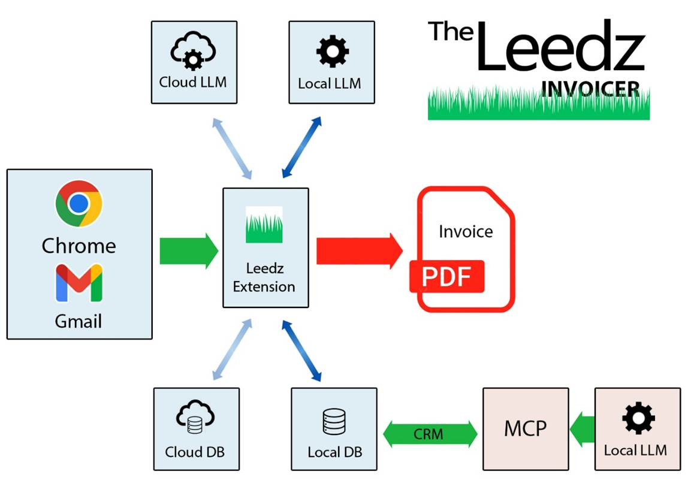
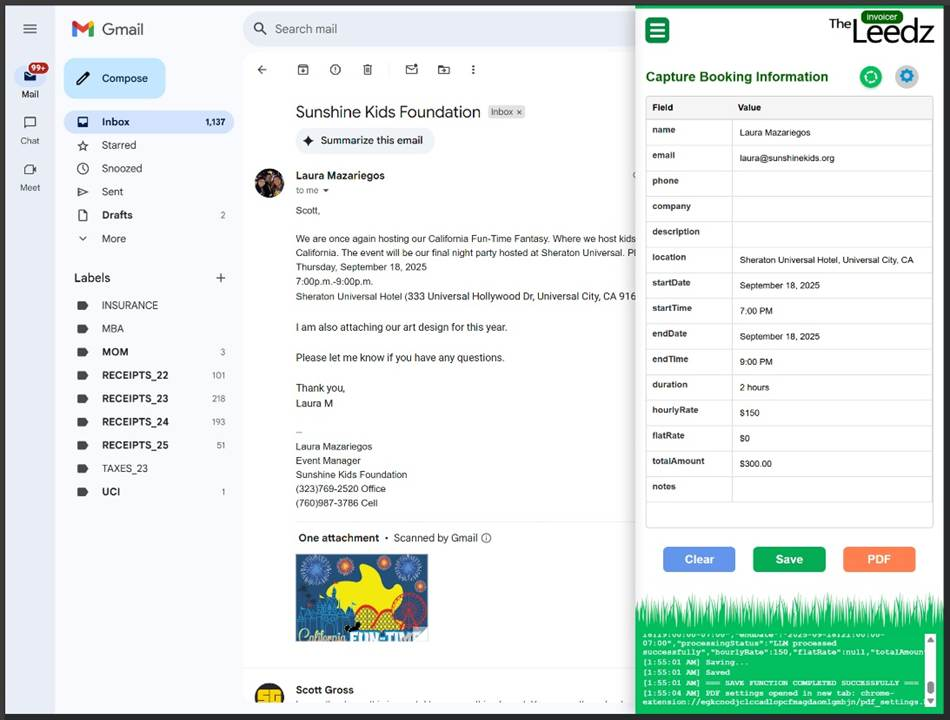
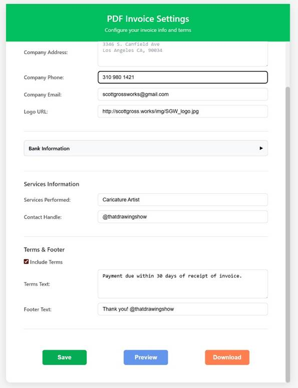
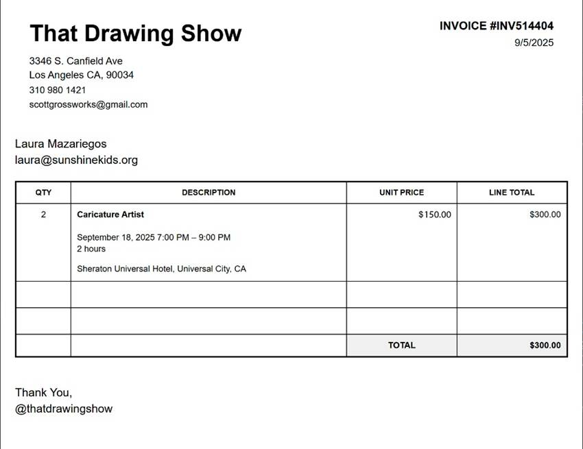

Leedz Invoicer
https://github.com/scottgrossworks/invoicer
Leedz Invoicer is a tool for small-business vendors and party performers that generates one-shot invoices from a Gmail thread and stores the info in a MCP-enabled CRM that you can query using an LLM.
Problem
Often it takes several time-consuming emails back and forth with a client to book an event and add it to your calendar. Once it's booked, an hour goes by and you get involved in something else. Then the client requests an invoice and you have to stop what you're doing for more paperwork.
Solution
Invoicer uses a chrome extension to scan a client's email thread, generate a basic invoice, and then send the info to a database. Generating the invoice goes from a 10-minute distraction to a 10 second button-push. The resulting CRM records every billed client, when and where you worked for them and how much they paid you. You can interact with the DB via an LLM, obviating the need for expensive client-management software like Streak.

Step 1: Capture Booking
A client emails you a booking request. You open the Leedz Extension to capture the booking info and save it to a schema database, either local or in the cloud.

|
Step 2 : Invoice Settings
Configure your business information.
The invoice can be configured with your Bank information, WIRE and routing numbers.
Users can preview the generated invoice and save it to the database.
PDF files (< 200Kb) are saved to local machine. |
 |
Step 3 : Generate Invoice
The final invoice is ready to be emailed back to the client in seconds.

Step 4 : CRM via LLM
The client and booking information are saved to an MCP-fronted database. The result is a record of the business that can be queried in natural language. As more queries are exposed, the user will have many of the insights available in a commercial CRM available in a conversational chat. As those chats integrate more tools, the potential for client management grows.